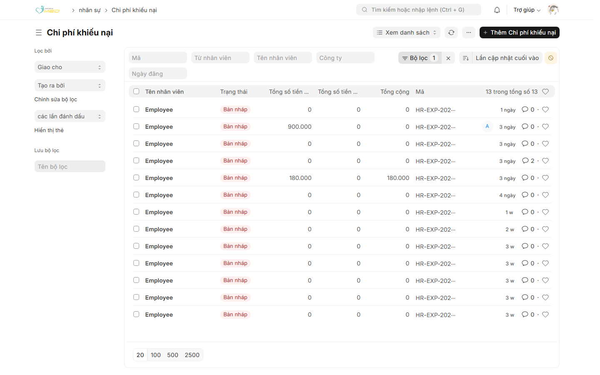
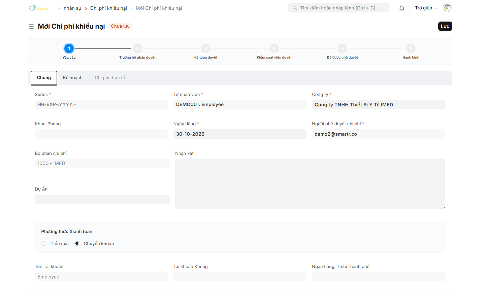
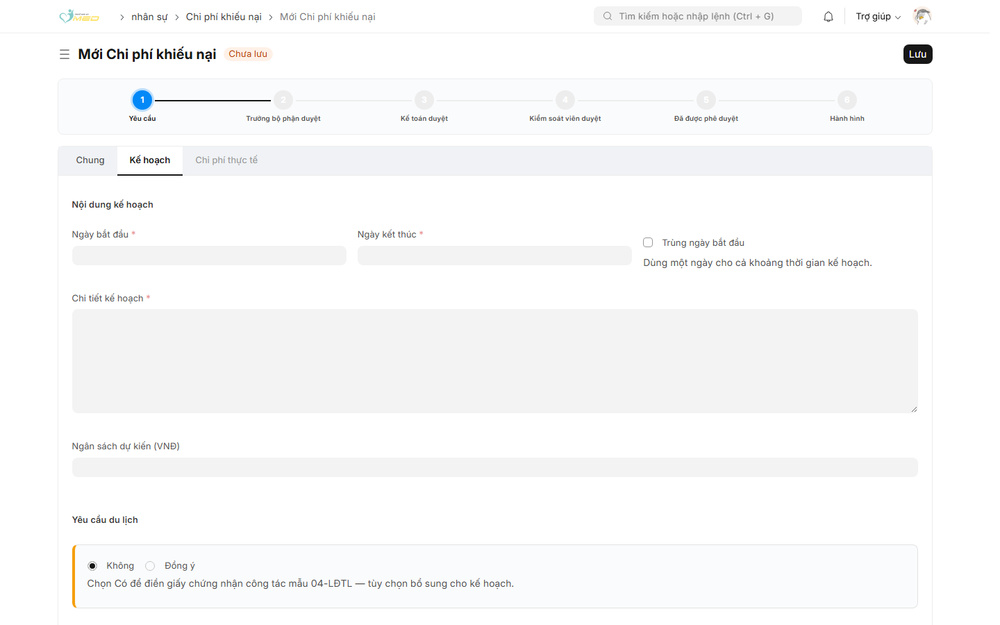
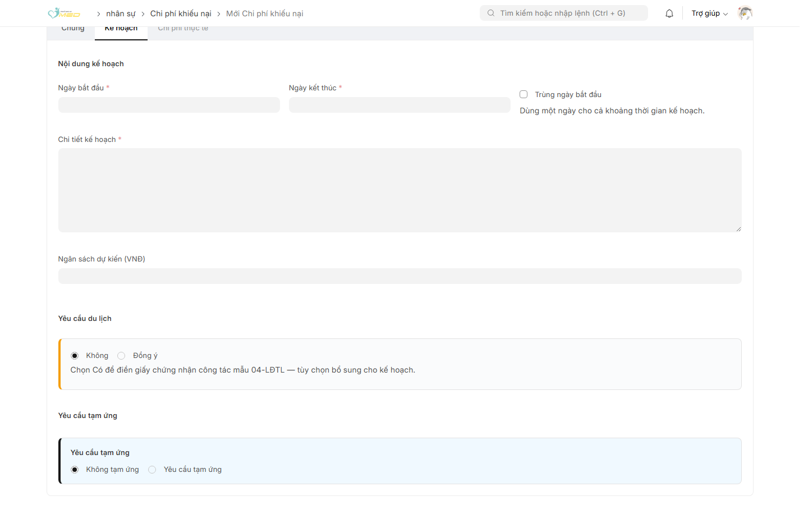
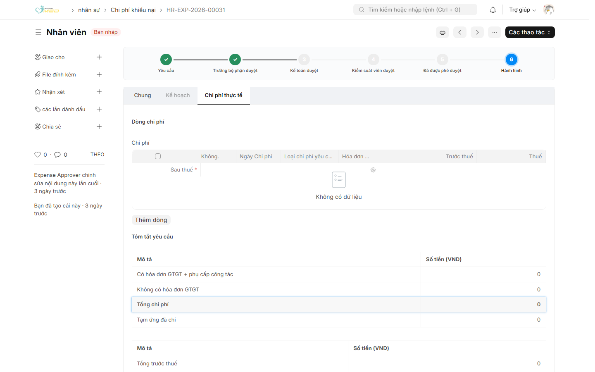
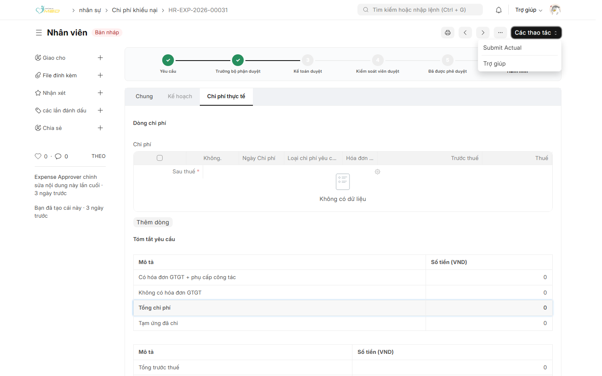

Mục đích
Dùng Đề nghị thanh toán để gửi kế hoạch chi và chi tiết chi phí thực tế trên một phiếu. Người duyệt chỉ thấy phiếu sau khi bạn gửi.
Tạo phiếu
Bước 1: Mở danh sách
Vào nhân sự → Đề nghị thanh toán. Danh sách chỉ có phiếu của bạn. Cột trạng thái có thể vẫn là Bản nháp. Xem thanh quy trình trên phiếu để biết bước hiện tại.

Bước 2: Tạo phiếu mới
Nhấn Đề nghị thanh toán mới. Form mới có nhãn Chưa lưu và nút Lưu.

Ở tab Chung, kiểm tra:
- Từ nhân viên và Công ty
- Người duyệt — lấy từ hồ sơ, không sửa trên form
- Phương thức thanh toán: Tiền mặt hoặc Chuyển khoản
- Tên Tài khoản, Số tài khoản, Ngân hàng, Tỉnh/Thành phố khi chuyển khoản
Nhấn Lưu. Phiếu nằm trong danh sách của bạn. Bạn đóng và mở lại sau được.
Gửi kế hoạch
Bước 3: Nhập Kế hoạch
Mở tab Kế hoạch và nhập:
- Ngày bắt đầu và Ngày kết thúc. Một ngày thì chọn Trùng ngày bắt đầu
- Chi tiết kế hoạch
- Ngân sách dự kiến (VND)
- Yêu cầu giấy đi đường: để Không nếu không cần giấy đi đường. Chọn Có khi cần mẫu 04-LĐTL
- Yêu cầu tạm ứng: chọn Không tạm ứng nếu không cần tiền trước. Chọn Yêu cầu tạm ứng khi cần Kiểm Toán chi đề nghị tạm ứng trước khi đi làm


Bước 4: Gửi kế hoạch
Nhấn Lưu nếu phiếu còn Chưa lưu. Mở Các thao tác và chọn Submit Plan. Menu này cùng chỗ với Submit Actual ở bước sau. Chỉ Submit Plan đưa phiếu tới người duyệt.
Thanh quy trình bắt đầu ở Yêu cầu. Sau khi gửi, bước Trưởng bộ phận duyệt là bước đang chờ.
Gửi chi tiết chi phí thực tế
Bước 5: Mở lại phiếu khi được làm tiếp
Khi người duyệt đã duyệt kế hoạch và không có đề nghị tạm ứng, bước Triển Khai sáng. Nếu có đề nghị tạm ứng, đợi Kiểm Toán chi đề nghị tạm ứng rồi bước này mới sáng. Mở đúng phiếu đó, chọn tab Chi tiết chi phí thực tế.

Bước 6: Thêm dòng và gửi
- Nhấn Thêm dòng
- Nhập Ngày Chi phí, Loại chi phí yêu cầu thanh toán, Trước thuế, Thuế, Sau thuế
- Đánh dấu hóa đơn nếu có hóa đơn GTGT
- Đính kèm chứng từ
- Kiểm tra Tổng hợp chi phí
- Mở Các thao tác → Submit Actual

Sau khi gửi
| Bước trên thanh | Ý nghĩa |
|---|---|
| Yêu cầu | Phiếu mới hoặc đang sửa |
| Trưởng bộ phận duyệt | Đang chờ người duyệt |
| Kế toán duyệt | Đang chờ Kiểm Toán |
| Kiểm soát viên duyệt | Đang chờ Kiểm Soát Trưởng |
| Đã được phê duyệt | Đã duyệt xong |
| Triển Khai | Được nhập chi tiết chi phí thực tế |
Khi bị từ chối, đọc ghi chú trên phiếu rồi sửa và gửi lại. Chi phí đã trả cho nhà cung cấp không khai trên phiếu này.